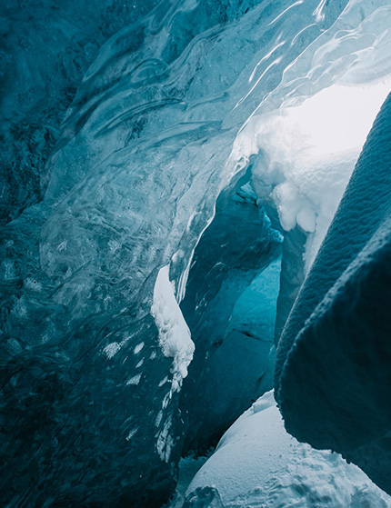
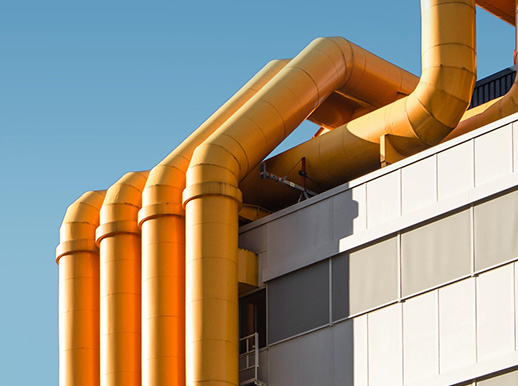
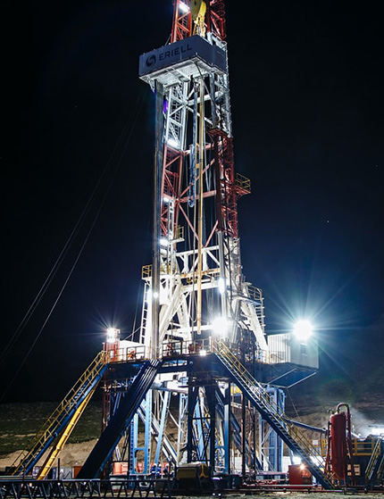
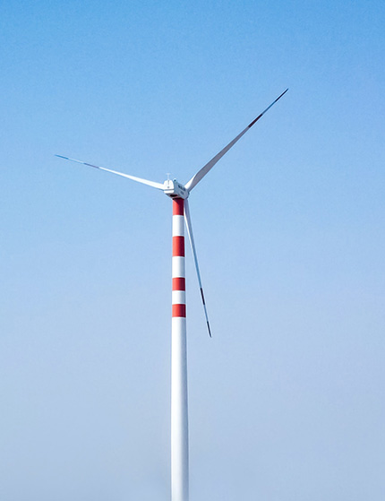
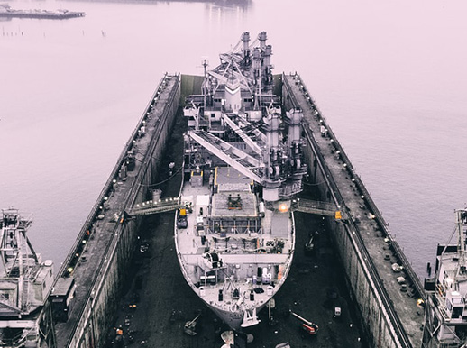

신기술
대우조선해양이 보유한
각종 첨단기술로
조선사업의 미래를
개척해 나가고 있습니다.
-

극지형 아틱드릴쉽
외부 온도 -40도, 설계온도 -50도인
최초의 아틱드릴쉽을 개발하여
혹독한 환경에서도 시추작업이
가능한 해양구조물입니다. -
부유식 원유 생산 저장 하역설비
FPSO는 거대한 원유저장용 선박 위에
해상 유전에서 원유를 뽑아올릴 수 있는
원유생산 설비와 생산한 원유를
안전하게 원유운반선으로 이송하는
하역설비를 한꺼번에 갖춘 설비입니다. -

액화천연가스 재기화 선박
천연가스를 액화된 상태로 실어
나르기만 하던 기존의 LNG선 위에
대규모 저장기지의 LNG 재기화 설비를 탑재해
해상에 정박한채 액화천연가스를
공급 할 수 있는 선박입니다. -
원자력 추진선
기존의 화석 연료를 대체하여
원자력을 추진 동력으로 활용하는 선박입니다.
Mining vessel, Subsea plant 등에서도
동력으로 활용 가능합니다. -

발전플랜트기술
BMPP는 세계 제일의 조선/해양 기술을
기반으로 설계/제작된 발전 설비로써,
일반 육상 발전소 대비 최적화된
Layout 및 설치 지형적 제약에서 자유롭습니다. -

해상풍력발전기 설비선
기존 설치선에 비해 한단계 진화한 개념으로
육상 건조한 해상풍력발전기를 운송·설치함으로써
작업 효율을 높이고 비용을 줄여
해상 풍력단지 개발분야에서
큰 활약을 할 것으로 기대됩니다. -

부유식 해상 건조 공법
Dry도크에서 건조하던 방식에서 벗어나
부양식 도크(플로팅도크)를 이용해
선박을 건조하는 공법을 말합니다.